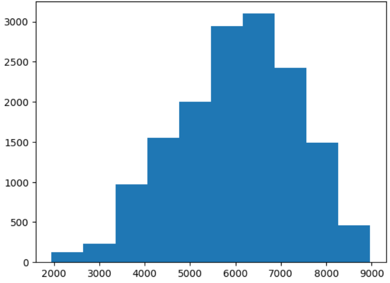
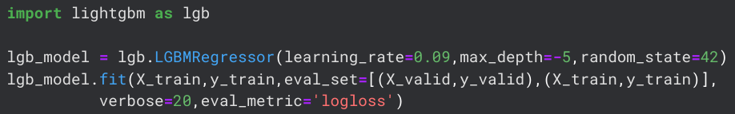
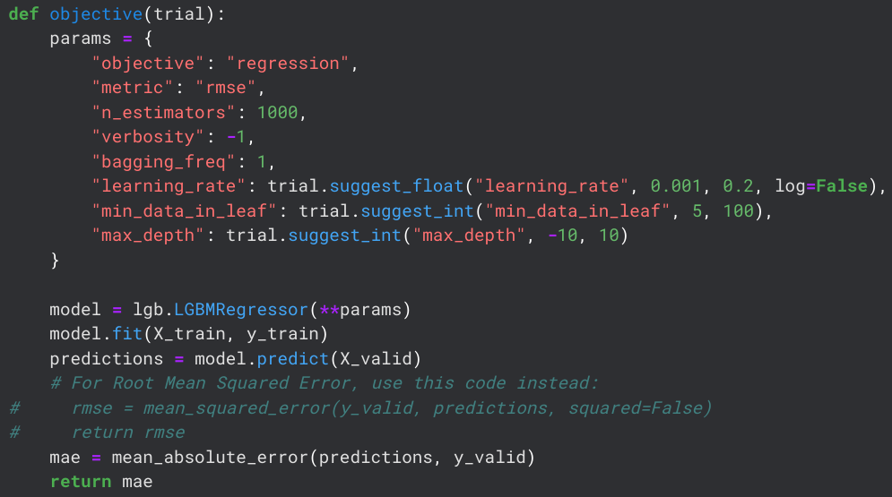
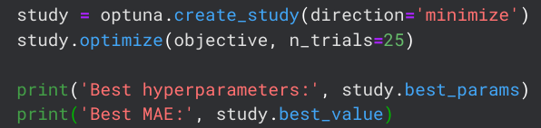
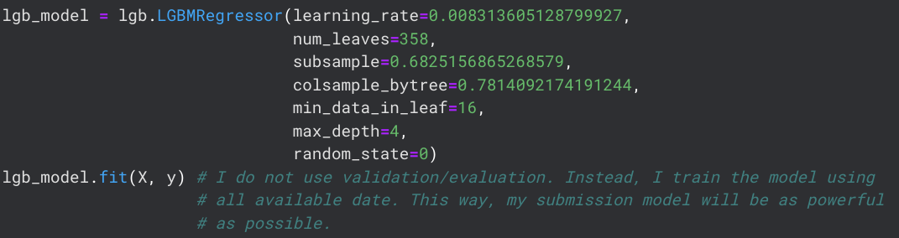

Kaggle Blueberry Yield Prediction Challenge
Predicting Blueberry Yield
Project Outline
In this project, I wanted to practice using Regressors and Hyperparameter Optimization. In particular, it was my goal to learn about LGBM and Optuna. The Kaggle Competition this project is based on can be found here.Exploratory Data Analysis (EDA)
This Kaggle Challenge used an artificially generated dataset. There were no missing values and no
categorical features. No data cleaning was necessary for this dataset.
The prediction target is a numerical variable containing the blueberry yield (shown in the very simple histogram below).
In total, there are 15 numerical features to help predict the target.

Model: LGBM Regressor
As I have never used any LGBM models before, I followed this tutorial. The following screenshot shows the basic lgbm setup before tuning the hyperparameters. Hyperparameter Tuning with Optuna
Optuna is the hyperparameter tuning tool used by the Kaggle community. Due to its popularity and good performance, I also want to start using it. There were several good tutorials online but the most helpful one I found was this one.In simple terms, Optuna allows you to define the parameters you want to tune and then it automatically runs a specified number of models with different combinations of those parameters. While running, it optimizes for a metric such as RSME or MAE (depending on the analyst's choice). I chose to optimize learning_rate, max_depth, and min_data_in_leaf. The optimization metric is set to MAE because this is the metric on which the Kaggle Competition is ultimately scored. 
I let optuna run for 30 trials (more would probably be better but also take longer) and used the optimal parameters it found for training my final model, which I will use for generating my competition entry. 
Final Model Specification and Competition Results
To enter the Kaggle Competition, I need to generate predictions using Kaggle's test data and my newly optimized model. For some reason, optuna returned insane values for the learning_rate parameter, so I manually set it to 0.09, which seemed to work well. I need to look into what I can change about my trials to get a more reasonable learning_rate (I tried many different trials with different intervals but they all returned values that seemed to maximize, not minimize, my MAE).The specific model I use for my competition predictions is trained using the following code. 
After submitting my predictions to the Kaggle Competition, it was calculated that my model predicted new data with an MAE of 347.94. The winning entry had achieved an MAE of 327.39. This was a great first experience using Optuna and LGBM models.